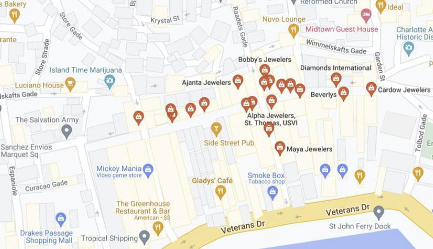
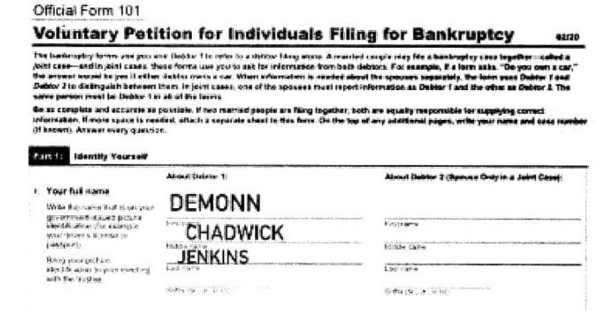
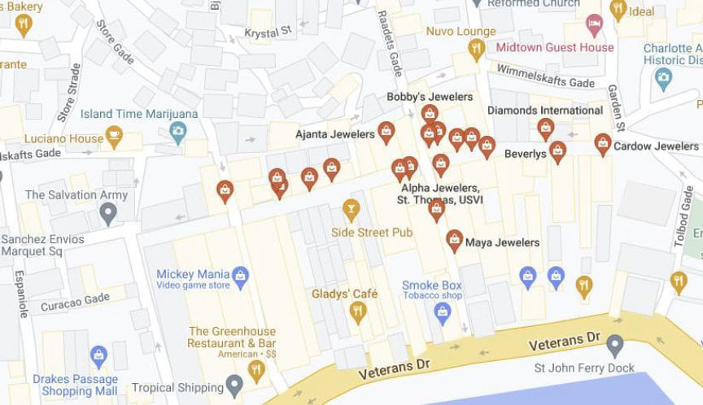
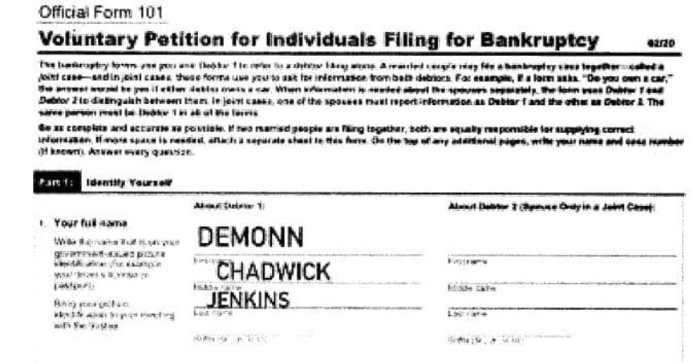

Fraudster Charged for Using Stolen Credit Card to Buy Jewelry
A man who purchased a diamond necklace with a credit card from the darkweb is facing 15 years in prison.
An affidavit filed by a special agent with Homeland Security Investigations accuses Demonn Chadwick Jenkins II, 27, of fraudulent use of credit card information.
On June 16, 2022, Jenkins used a Capital One Platinum Mastercard in someone else’s name to purchase a diamond necklace for $9990 and a Rolex watch for $10,800 at a jewelry store on Main Street in St. Thomas.

The next day, Customs and Border Protection (CBP) Officers at the Cyril E. King Airport searched Jenkins’ bag and discovered the necklace and watch. According to the affidavit, Jenkins “failed to declare the purchases of the jewelry on his Customs and Border Protection Declaration form.” Jenkins had planned to return to Atlanta, Georgia, on June 17, 2022.
“He was later identified as the purchaser of the jewelry using footage taken from the jewelry store’s security cameras,” according to a press release from the United States Attorney’s Office for the District of Virgin Islands. Based on that information, Jenkins likely told CBP officers that he had not purchased the jewelry in St. Thomas. If he had the jewelry before arriving on the island and did not alter it while on the island, he would not need to pay the Customs Duties for those purchases.

When questioned by CBP officers, “Jenkins admitted that he purchased the Mastercard on the Dark Web for approximately $15.”
Assistant U.S. Attorney Adam Sleeper filed a motion to detain Jenkins until his trial because he “has previously been arrested for committing similar crimes.”
On June 21, 2022, U.S. Magistrate Ruth Miller released Jenkins to a third-party custodian.
If convicted, Jenkins faces 15 years in prison.
[em]GEORGIA MAN CHARGED WITH CREDIT CARD FRAUD[/em] | archive.is, archive.org, justice.gov
An affidavit filed by a special agent with Homeland Security Investigations accuses Demonn Chadwick Jenkins II, 27, of fraudulent use of credit card information.
On June 16, 2022, Jenkins used a Capital One Platinum Mastercard in someone else’s name to purchase a diamond necklace for $9990 and a Rolex watch for $10,800 at a jewelry store on Main Street in St. Thomas.

The red pins are jewelry stores on Main Street, St. Thomas.
The next day, Customs and Border Protection (CBP) Officers at the Cyril E. King Airport searched Jenkins’ bag and discovered the necklace and watch. According to the affidavit, Jenkins “failed to declare the purchases of the jewelry on his Customs and Border Protection Declaration form.” Jenkins had planned to return to Atlanta, Georgia, on June 17, 2022.
“He was later identified as the purchaser of the jewelry using footage taken from the jewelry store’s security cameras,” according to a press release from the United States Attorney’s Office for the District of Virgin Islands. Based on that information, Jenkins likely told CBP officers that he had not purchased the jewelry in St. Thomas. If he had the jewelry before arriving on the island and did not alter it while on the island, he would not need to pay the Customs Duties for those purchases.

Jenkins filed for bankrupcy in May 2022
When questioned by CBP officers, “Jenkins admitted that he purchased the Mastercard on the Dark Web for approximately $15.”
Assistant U.S. Attorney Adam Sleeper filed a motion to detain Jenkins until his trial because he “has previously been arrested for committing similar crimes.”
On June 21, 2022, U.S. Magistrate Ruth Miller released Jenkins to a third-party custodian.
If convicted, Jenkins faces 15 years in prison.
[em]GEORGIA MAN CHARGED WITH CREDIT CARD FRAUD[/em] | archive.is, archive.org, justice.gov